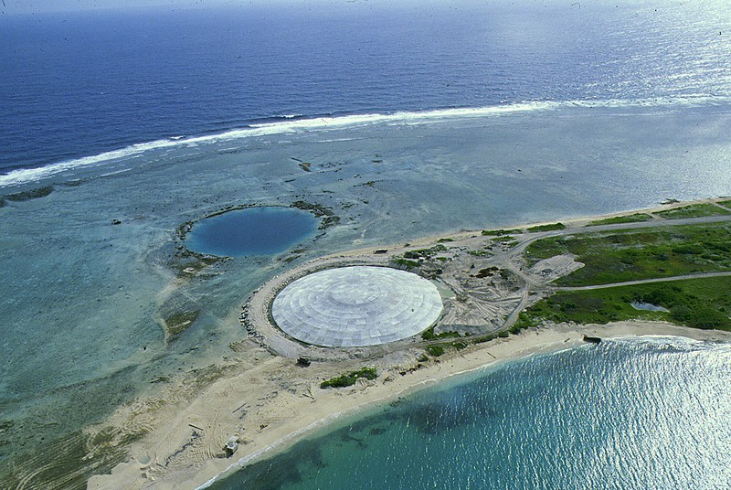
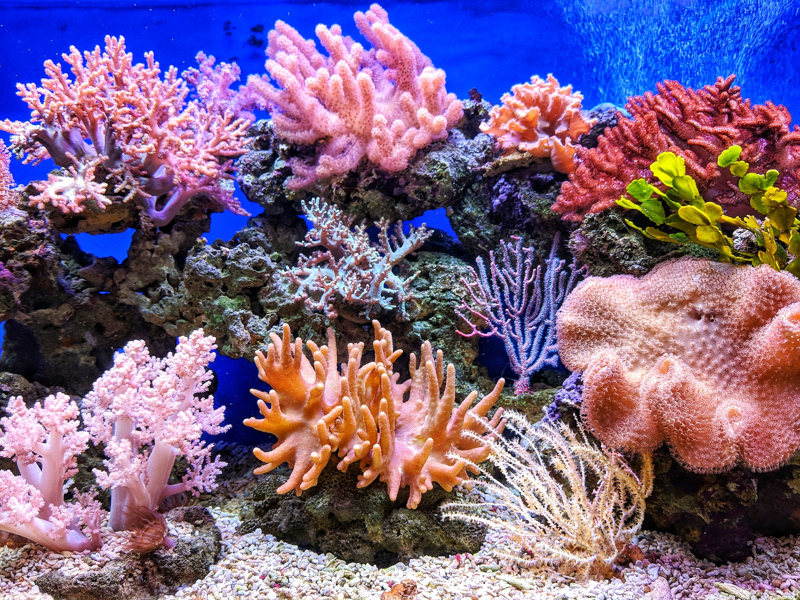

O Atol de Bikini é um arquipélago localizado nas Ilhas Marshall, no Oceano Pacífico. Além de sua grandiosa beleza natural, esse local foi utilizado pelos Estados Unidos em 1940-1950 como um laboratório para testes atômicos. Isso provocou níveis de radioatividade que fizeram a região só ser habitada novamente em 1996. Ao contrário das bombas nucleares jogadas em território japonês, o Atol de Bikini foi evacuado antes das experiências, exceto pela vida marinha que mesmo com os impactos de explosões e radiação recuperou-se rapidamente. Embora haja habitantes, estes preocupam-se com o perigo de se alimentar com recursos naturais ou os peixes da região, já que os cientistas ainda não sabem o quão eles foram afetados pelos testes.

Grande Barreira de Corais Austrália
A Grande Barreira de Corais no litoral Australiano sempre foi razão de admiração pela sua grandeza e beleza exótica. Nela, vivem 600 tipos de corais e mais de 1.500 espécies de peixes. Porém, nos últimos anos, com as mudanças climáticas, os corais vêm sofrendo branqueamento. Esse fenômeno ocorre quando, para suportar as altas temperaturas, os corais liberam uma microalga com nome de zooxanthellae e caso a temperatura não caia, eles perdem sua cor e morrem. Se o planeta continuar no processo de superaquecimento, é possível que todos os corais venham a morrer e a fauna desse local se extinga. A Austrália vem investindo para melhorar a água do litoral e tentar preservar os recifes, a UNESCO irá avaliar se os esforços vão ser o bastante para salvar o ecossistema.

Ópera de Sydney
A história da Ópera de Sydney inicia-se em 1956, quando o chefe de governo de Nova Gales do Sul lançou um concurso internacional de arquitetura para construir uma nova casa de ópera em Bennelong Point. O dinamarquês John Utzon venceu e seu projeto é o monumento que conhecemos hoje em dia. A construção demorou 16 anos e teve um gasto de 102 milhões de dólares. É considerado desde 2007 um Patrimônio Mundial pela UNESCO. É um ponto turístico famoso e muito visitado em Sydney, representando para muitos, a Austrália. Apesar de ser o símbolo mais famoso do país, não se localiza na capital australiana, que é Canberra.